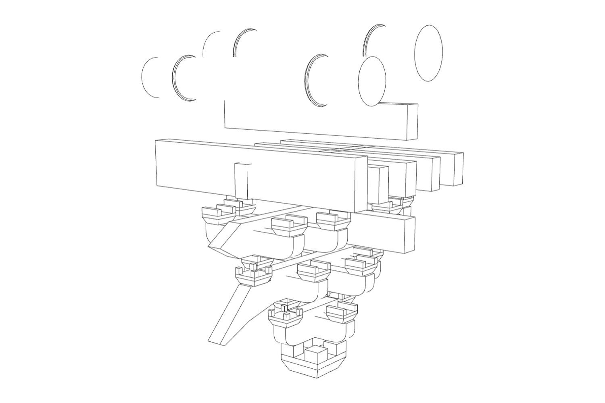

互承、互鎖與摺紙
一個局部的構造規則，重複之後能決定整體的形到什麼程度？這個系列從宋代虹橋的編木出發，用同一條「上下交替」的規則，依序做成線（互承桿件）、面（紙板）、體（拓樸互鎖塊），再到摺紙皮層。每個模式都是可以直接操作的模擬器。

從 WORK 008 斗栱延伸斗栱原本是把屋簷的重量層層傳到柱上的構件，後來漸漸變成裝飾的符號。這個系列接著問：如果把「接頭決定形」找回來，會長出什麼？每根桿件一端搭在別人身上、一端托住別人。接頭的偏心距決定曲度。
先畫目標形，再切成三角網格、互承化，最後由解出的形反推每個接頭。竹籤、手裁的板、列印的三角錐，共用三種列印接頭。
沒有黏著劑，塊與塊靠交替的斜面互相夾住，邊框把整片鎖起來。全部 3D 列印。
一個單元的摺痕規則，重複之後決定整片外牆皮層的形與開合。
目前的驗證範圍：所有模式只驗證幾何（接不接得上、實體有沒有重疊、塊有沒有被鎖住），沒有受力計算，也還沒有實物列印的校正。
列印檔：各模式都能產生 3D 列印或雷切檔，下載功能暫不開放，待實物驗證後再提供。